If you see any issues, please do make us aware via our Contact Form.
Thank you for browsing FNaFLore.com, we hope you enjoy the improvements that are coming to the site!
a cute cat FNaF parody
where you're allergic to cats!

How Help Wanted explains a LOT!
Before I start with the theory, I will comment about a misconception that is going around and potentially damaging to the FNaF lore. It’s about Tape 13. Many people seem to think that in the FNaF universe, Scott created the games and that nothing in the games can now be trusted as Fazbear Entertainment could have told lies. I believe that the games are 100% canon. They just now have a canon reason for the mystery.
Handunit admits at the beginning that the games (1-5) are loosely based on true events, however the rest is a “lunatic”s story. This is the current belief/fear of a lot of theorists, but here is where Tape 13 comes in. Tape Girl reveals that while Fazbear Entertainment was rushing to develop the VR game, they sent an email to the devs revealing that they were paying Scott to make a game about the murders, opposed to Scott making a game on his own. However, why are they suing him? and how did they make the mistake?
I think that Scott began to subtly add details to the games that Fazbear Entertainment did not want. The truth behind the murders. The keypad in FNaF 3. The death minigames. The FNaF 4 box. The private room. All things that Fazbear did not want the public to know about. So they tried to sue him. They brought up the emails to Scott and planned to send them to their lawyers but in their haste plus the added pressure of the VR game to clear their name, they sent the emails to Silver Parasol. After that, they fired Silver Parasol for seeing what they saw and hired SteelWool.
There you go. The games are still canon. Scott has not ruined the lore or anything. He just added another layer that changes nothing.
Now, I’m sure everyone knows about the tapes so I won’t be discussing about them since I won’t be bringing anything new to the table, however I will talk about Pizza Party and how it actually solves a large part of FNaF 4’s mystery.
Fredbear/SpringBonnie
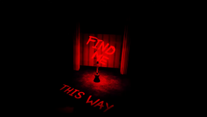
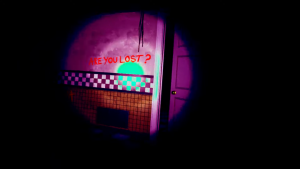
Screenshots from FusionZGamer’s playthrough
We have a SpringBonnie plush following the child, instructing it to go to William Afton so they can be killed. This reminded me of the Shadow Freddy minigame.

“follow me.” is about William using the same technique that he used to lure the kids.
But then I noticed something, that this same technique was used on BV with FredPlush.
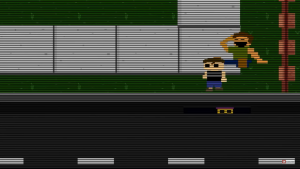
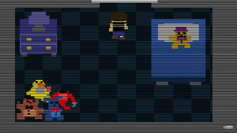
I think that BV saw William committing the MCI, and William noticed. So he made a plan. He would give BV FredPlush and scare him away from the animatronics for fun and so that BV wouldn’t mess up any of William’s work.
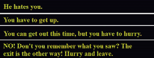
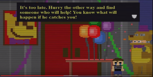
The part about “catches you” reinforces what BV saw and why he is afraid of the animatronics. He saw SpringBonnie luring children and stuffing them in the Classic animatronics. If he saw Charlie’s death, he would have seen William killing Charlie without a suit on and wouldn’t be scared of the animatronics, but he is. Also, another thing I would like to add is that SpringBonnie is not considered one of BV’s friends. That is because BV is afraid of SpringBonnie because he thinks that animatronic is evil. This is reinforced by Scott’s comments.
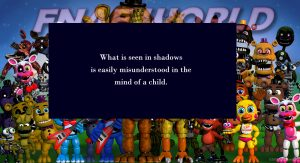
BV saw William in the SpringBonnie killing the children in the shadows, so he thought SpringBonnie was the killer, not William. So William used Fredbear, instead of SpringBonnie to talk to him.
Help Wanted revealed another thing, Freddy’s started in 1983. So, if BV died, it would be around the same time as the MCI. For me, this was the final nail in the coffin, and I now firmly believe BV is Golden Freddy. This is reinforced by the Happiest Day minigame having clear parallels to the Bite of 83, and the animatronics in the FNaF 3 minigames being prominent in the FNaF 4 minigames.
Balloon Boy


Mangle

Toy Chica


Stage 01
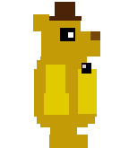
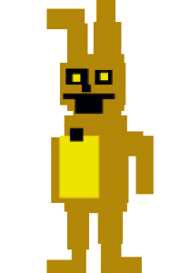

The dark truth of the Bite of 83
Now, the anime cutscenes. I previously talked about the real translations and claimed they were about Michael’s scooping incident but I was wrong. it was actually about the Bite of 83. Here is my interpretation of them.
Here is a link to them in order for own analysis: https://www.youtube.com/watch?v=3Lf4Beaesiw
Freddy (BV):
BV is reminded of a harsh time while eating breakfast. Then he kills a bird that was annoying him, but he doesn’t remember what exactly he did to kill it. I think this is analogy for BV having bad luck as finding a dead bird is considered a sign that things will change. Then some troublesome kids tried to kill him and help him. This is the Bite of 83. They shoved him into Fredbear’s mouth then once his head was crushed, they likely tried to help but ended up making it worse. BV then meets his ancestors. I think this is BV dying and going to FNaF World. He then talks of floating in space (FNaF 57) and having a head on his shoulder (Mangle). His ancestors then sent him down saying he “was just holding onto the juice of too many dojos”. I think this fits right in with the Clock Ending.
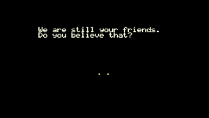
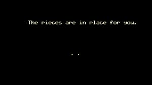
Freddy in falls into an alpaca drinking trough.
Now, it takes a dark turn.
Foxy (William)
He says the dead bird incident wasn’t an accident and intends to troll that bear until he dies. I think this means that William forced Foxy Bro to bully BV so that he was scared and wouldn’t go near the animatronics. He then talks about how he is the villain and doesn’t have character development. That makes sense as William does not have a motive, he just kills kids. He talks about how he despises the bear as he always his meditating on his pond and Foxy can only meditate when it’s winter. I think this is an analogy for how BV is too nosey and he is getting in the way of William’s plans. Foxy then creates an alpaca costume, which I think is William creating the SpringBonnie suit to kill kids. William was going to kill kids when it was BV’s birthday so he had some people look after him but they were drunk and didn’t stop Foxy Bro accidentally killing BV. “Apparently it was a birthday.” Then Foxy rolls Freddy in the alpaca droppings after pulling him out of the trough. So whatever William is doing is after BV was revived, but what was it? The Nightmares. William decided to have fun and make a torture room for BV not because of some grand plan but because William is sick and thought of it as sport.
But one question remains, how did BV survive?
Help Wanted provides the answer.
Golden Freddy and Michael
Before I talk about BV, I will talk about Charlie in the novels (TFC spoilers).
It was revealed in TFC that Charlie is actually a robot with the memories of Charlotte (Henry’s real daughter) implanted in her, therefore, she isn’t the real Charlie. Help Wanted actually revealed something that actually helps with interpreting what happened with Charlie, consciousness transference. Malhare is a copy of William, but the real William died. This brings us to BV.
I think that BV died and became Golden Freddy, but then not William, but Henry saved him and made him into a robot. Why Henry? Because FredPlush is talking in a different colour. Someone else is using FredPlush to communicate with BV. “I will put you back together.”
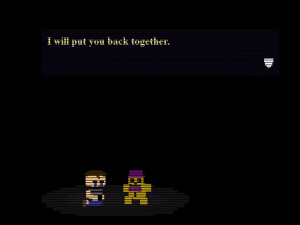
Here is my timeline after the Bite of 83.
William kills an unknown child at JR’s, hence the person telling William that he can’t be there (this is the site of the mysterious 7th victim, likely Cassidy). Then when he comes back, he sees Charlie locked outside as Henry is busy attending to BV (SAVE HIM). He then kills her. “Later that night”, he comes back to his house and is greeted by Foxy Bro. “Leave him alone tonight. He’s had a rough day.” William goes there but BV is not there. That is because Henry is transferring his consciousness into a robot, Michael.
That is why Golden Freddy is so glitchy around Michael and says “It’s me.” Another thing I would like to mention is that Golden Freddy is a ghost, no one is possessing Golden Freddy or Fredbear. So you’d assume that the same person in the books and the games is Golden Freddy as it’s the child impersonating it. It’s their own image. So, funny that Golden Freddy is Michael Brooks.
Future of FNaF
I think that the saga of Michael Afton is over, but I believe another is starting. I think that the OrGN image and the Exotic Butters Easter Egg was signs that Fazbear Entertainment is starting back up. That’s why they made Help Wanted. To clear their name for maximum profit. With the AR game, canon book series, AAA game and hopefully Into Madness, we could see a whole new story. That is, if we can understand the first one.
TL: DR; William is FredPlush and evil, BV is both Golden Freddy and Michael, while Charlie died because Henry was trying to save BV.
Freelance theorist